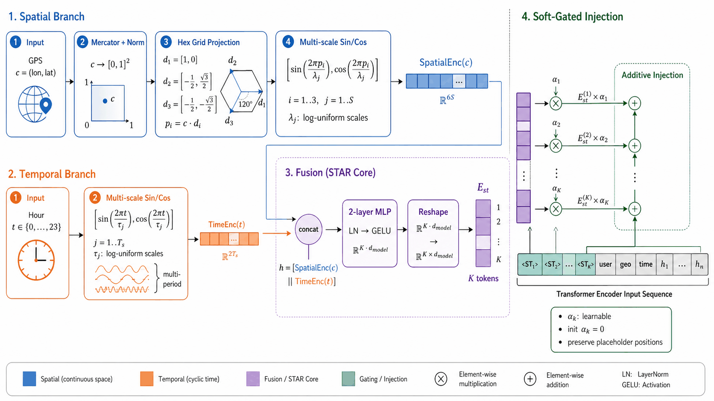
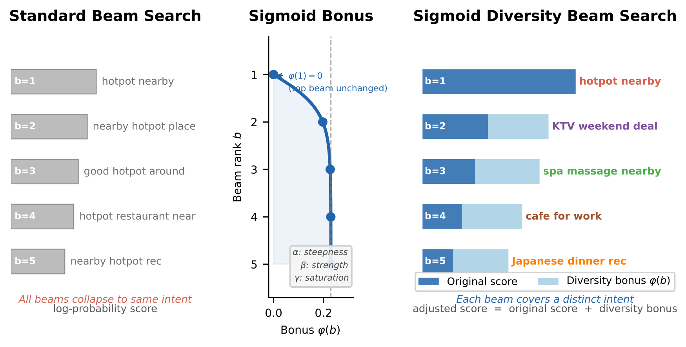
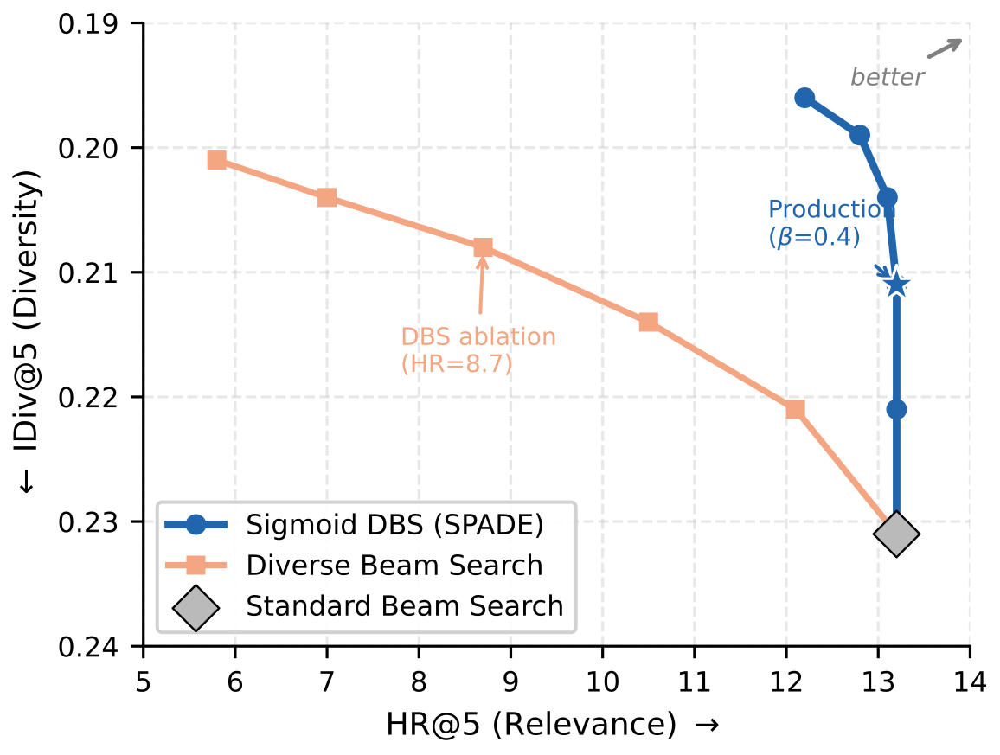

目录 · 10 节
1它到底在解决什么问题？2整体流程：四段各改一处3分词表：让值钱的长尾词更短4位置和时间：从城市 token 到连续坐标5训练：直接在线上曝光和点击上对齐6解码：只给后面的 beam 加分7这套方案真的更好吗？8我认为它的局限9一个推荐或搜索团队可以怎么试10评价做本地生活或位置相关推荐的团队值得读：它为首页搜索词推荐做了一个生成模型，并有线上 A/B 验证。本地生活 App 首页要从几百万个可能的搜索词里生成几条给用户，几条之间不能重复，还要对得上用户此刻的位置。SPADE（这篇论文的生成式框架）把生成链路的四段各改了一处。分词时，BPE 按点击和转化价值给片段对的出现次数计权，优先合并高价值搜索词里的片段，让长尾词切得更短。输入时，用户的精确坐标和当前小时被编码成向量加进去。训练时，直接用线上的曝光和点击数据做 DPO 对齐。解码时，按累计分数给 beam 排名，名次越后加分越多，给不同搜索词更多保留机会。离线 HR@5 比最强的生成式基线相对高 5.6%，推荐的店离用户的平均距离缩短 40.3%；一周线上 A/B 里，模块点击率提高 1.88%。
我认为这篇最有用的地方，是它把一条生成链路拆成四段，每段只改一处，而且每处都能单独拿去用。四处分别是：分词表、位置和时间的输入方式、偏好训练、解码。其中解码那一处最便宜，不用重训模型就能试。每一处改动都对准一个具体问题，而不是笼统地“加强模型”。消融表能看出每处主要影响哪个指标：位置编码主要管距离，解码那一处主要管多样性。
它到底在解决什么问题？
搜索词推荐（论文叫 proactive query recommendation）出现在本地生活 App 的首页。用户还没打字，系统就在搜索框下面摆出几条搜索词，用户点哪条就直接搜哪条。它和普通推荐不一样：普通推荐从一个固定的商品池里挑，这里要从平台几百万个搜索词里生成自由文本，生成的词还必须能在平台的搜索系统里搜出合适的结果。
举一个例子（示意）：工作日中午 12 点，一个用户在某个写字楼区打开 App，最近搜过火锅和咖啡。展示位只有 5 个。
| 方案（示意） | 5 条搜索词 | 问题 |
|---|---|---|
| 普通 beam search | 附近火锅、火锅店附近、附近好吃的火锅、火锅餐厅、火锅推荐 | 5 条说的都是同一件事 |
| 只用城市当位置 | 火锅、KTV 周末优惠、温泉度假村 | 温泉在城郊几十公里外，搜出来的店离用户太远 |
| 理想结果 | 附近火锅、工作日午餐套餐、适合办公的咖啡馆、附近按摩、日料晚餐 | 每条一个不同需求，都在附近 |
表里直接看得到两个问题（重复、位置太粗），再加上另外两个，正好是论文的四个要求。第一，长尾词难生成：「适合办公的咖啡馆」这种出现次数少的词，被切成很多个 token，生成概率被一路乘低。第二，位置太粗：只把城市、区县当文字 token 塞进输入，分不清商圈中心和边缘。第三，偏好对不上：通用的偏好训练和线上真实的曝光、点击分布不一样。第四，解码重复：beam search 只按概率排，5 条往往是同一个意思的不同说法。
整体流程：四段各改一处
SPADE 是一个 Transformer 生成模型。输入序列依次是用户画像、粗粒度的情境 token（城市、区县、星期、时段等）和最近 30 次行为（搜过的词、去过的店名），输出 5 条搜索词。四处改动按流程顺序排：
| 环节 | 改动 | 解决的问题 |
|---|---|---|
| 分词表（训练前） | OA-BPE：BPE 合并时按搜索词的业务价值计权 | 长尾词切得太碎 |
| 输入 | STAR：把精确的 GPS 坐标和小时编码成几个向量，加进输入 | 位置只到城市一级 |
| 训练 | 先跨品类预训练，再用 MARS-DPO 在线上曝光点击数据上对齐 | 偏好对不上线上分布 |
| 解码（推理时） | SDBS：给排在后面的 beam 加一个随名次增长的加分 | 几条结果重复 |
分工可以一句话说清：前三处决定模型给每条搜索词多少概率，最后一处决定从这些概率里怎么挑出 5 条不重复的。下面按顺序拆开讲。
分词表：让值钱的长尾词更短
为什么分词会影响推荐？生成一条搜索词的概率是每个 token 概率的乘积，每个因子都不超过 1。一条词切得越碎，乘的因子越多，整条的概率通常越低。只按出现次数分词时，低频的长尾词会被切得很碎，在生成时天然吃亏。
OA-BPE 只改合并时的打分。普通 BPE 比较一对片段在训练语料里出现的总次数。OA-BPE 还看这些出现位置所在的搜索词各有多少业务价值：先按出现次数算出平均价值，再和总次数相乘。论文把它写成加权求和；等价地，可以写成：
是片段对在训练语料中的总出现次数， 是这些出现位置对应的平均业务价值。这里的次数是分词语料里的计数，不是直接拿线上曝光量当次数。业务价值由搜索词的 CTR、CVR 和曝光量修正项组合而成，曝光量通过这个权重影响分数。所有位置的权重都等于 1 时，就回到普通 BPE。
一个能手算的例子（示意）：片段对甲出现 1000 次，所在搜索词的平均价值是 0.2，得分 200；片段对乙只出现 300 次，平均价值 0.8，得分 240。普通 BPE 先合并甲，OA-BPE 先合并乙。论文据此给出一个简单结论：价值高几倍，就能抵消几倍的出现次数差距。
这一步只在训练前做一次，不增加训练和推理的成本。效果看分词统计：
| 搜索词类型 | 指标 | 普通 BPE | OA-BPE |
|---|---|---|---|
| 头部（出现 ≥1000 次） | token 数中位数 | 4.1 | 4.0 |
| 长尾（出现 <100 次） | token 数中位数 | 7.2 | 5.9 |
| 长尾（出现 <100 次） | 进入前 10 条输出的概率 | 0.312 | 0.383 |
长尾词的 token 数中位数少了 18.3%，64.1% 的长尾词至少少切一个 token。头部词几乎没变。这说明计权只改了长尾那一段的切法，没有把常用词切坏。
位置和时间：从城市 token 到连续坐标
为什么还需要这一步？把城市 ID 写成 token，精度最多到这个 ID 那一级，而且两个 ID 之间没有“离得近还是远”的关系。本地生活最在意的恰恰是几公里之内的差别。
STAR（把位置和时间送进模型的模块）把用户此刻的精确坐标和当前小时编码成几个向量，加到输入序列情境段开头预留的几个位置上（向量个数论文记作 K，和输出条数无关）：

空间编码的做法可以这样理解：把地图沿三个方向（彼此相隔 120°）各画一组周期不同的波纹，周期从约 1 公里到城市级别。用户坐标在每组波纹上的读数（正弦值和余弦值）拼起来，就是这个位置的编码。周期短的波纹分得清相邻街区，周期长的分得清城区和郊区。时间编码对“几点钟”做同样的事。两路编码拼接后过一个两层 MLP，再切成这几个向量。
每个向量加进输入时，先乘一个可学习的门控系数，初始值是 0。也就是说，训练刚开始时 STAR 完全不起作用，模型先学好语言部分；训练推进后系数慢慢变大，位置和时间的信号才逐渐进来。向量是“加到”预留位置上，而不是替换那个位置原来的 embedding，原有的位置编码因此保留了下来。
拆掉 STAR 的各个部分，结果如下（GeoC@5 是论文的地理一致性指标：对每条生成的搜索词，取搜索结果里离用户最近的店到用户的距离，再取平均，单位公里，越小越好）：
| 变体 | HR@5 | GeoC@5（公里）↓ |
|---|---|---|
| 完整 SPADE | 13.2 | 1.66 |
| 去掉空间编码 | 12.7 | 2.55 |
| 去掉时间编码 | 13.0 | 1.79 |
| 只用 1 公里一种尺度 | 12.9 | 1.91 |
| 去掉门控，直接相加 | 12.8 | 1.82 |
去掉空间编码，GeoC@5 涨了 53.6%，HR@5 也降了 3.8%。这说明位置不只决定推荐得近不近，也影响推荐得准不准。去掉门控时空间和时间信号都还在，HR@5 却降到 12.8，说明训练早期直接灌进这些向量会扰乱模型已经学到的表示。最细的尺度从城市级逐步细到 1 公里，GeoC@5 从 2.68 一路降到 1.66。
训练：直接在线上曝光和点击上对齐
模型的训练分先后两段，第一段是跨品类预训练：用餐饮、娱乐、生活服务等多个品类的搜索日志，训练模型预测用户下一次会搜什么。这一段的交叉熵先把模型输出的每个词的打分除以温度 2，再算概率和损失，让预测分布平一些。
第二段是 MARS-DPO（论文的名字），在首页搜索词推荐模块自己的曝光点击数据上做 DPO。它和普通 DPO 有三处不同。
第一，偏好对直接从线上的候选列表里取。每次请求，线上系统本来就召回了一批候选搜索词。MARS-DPO 就在这批候选里挑正样本和负样本，不用另外让模型生成，训练分布也和线上流量一致。
第二，每个候选的奖励由三部分加权组成，权重是 0.8、0.1、0.1：
| 奖励 | 怎么算 | 权重 |
|---|---|---|
| 排序位置 | 线上排序模型把它排在第几位：排第 r 位得 ，越靠前越高 | 0.8 |
| 可搜性 | 把这条词和它搜出的前几个结果交给 Qwen3.5-122B-A10B，让它判断这条词能否搜出合适结果，读“是”和“否”两个回答的概率，取“是”占的比例 | 0.1 |
| 距离 | 搜出的最近一家店离用户的距离取对数，再在所有候选里归一化到 0 到 1，用 1 减去它；越近越高 | 0.1 |
这些奖励都在训练前离线算好。上线推理时不调用大模型，也不需要这些奖励。
第三，负样本挑“难”的。奖励最高的候选当正样本，其余候选按和正样本的奖励差排序，取差距最小的 5 个当负样本。差距越小的负样本，在损失里分到的权重越大。举例（示意）：正样本奖励 0.9，两个负样本奖励 0.8 和 0.5，差距 0.1 和 0.4。按论文的集中度参数 2，权重之比是 ，也就是约 65% 对 35%，第一个负样本更受重视。这样模型主要学“好的和差一点的怎么区分”，而不是学已经一眼能分开的对。
另外有两个小处理。纯 DPO 可能让正负样本的概率一起下降，所以再加一项正样本的 SFT 损失，权重 0.5，把正样本的概率拉住。每条训练样本也按反馈强度计权：只曝光没点击 0.5，有点击 1.0，有转化 2.0。 Hoot 说

更新前（示意）
- 正样本概率
- 0.4
- 负样本概率
- 0.2
- 正负概率比
- 2
一种更新结果（示意）
- 正样本概率
- 0.3
- 负样本概率
- 0.1
- 正负概率比
- 3
示意：负样本概率下降得更快，正负概率比就会上升，即使正样本本身也下降。固定参考模型时，这符合 DPO 改善相对偏好的方向；正样本的 SFT 项则单独鼓励正样本概率上升。表里不是论文实验结果。 出处: 论文 §3.4.2 的正样本 SFT 项；概率为示意，比例由 checks 重算
把 MARS-DPO 换回普通 DPO（负样本随机挑、样本等权），HR@5 从 13.2 降到 12.8。反过来说，MARS-DPO 比普通 DPO 的 HR@5 高 3.1%，MRR@5 高 3.5%。
解码：只给后面的 beam 加分
前面三处管的是概率，解码这一步管的是从概率里挑出 5 条不重复的。只按概率解码时，5 条常常是「附近火锅」「火锅店附近」这样的改写。
SDBS（解码时让结果不重复的搜索方法）只在推理时用。每一步，当前 B 条 beam 按累计分数排好名次，第一名记为第 0 名。每条 beam 各自往下扩展 2B 个候选 token。每个候选的分数是父 beam 的累计搜索分数（沿路径累计的 log 概率，加上之前各步拿到的加分），加上这个 token 的 log 概率，再加上父 beam 名次对应的加分 。所有 beam 的候选放在一起排序，保留前 B 个，作为下一步的 beam。加分曲线是：
在 、、 时，这条曲线有四个性质。第一，第 0 名的加分正好是 0。第二，名次越靠后，加分越多。第三，每往后一名多加的越来越少。第四，加分有上限，最大是 。 控制总体加分强度，线上用 0.4； 控制涨得多快， 控制上限占 的比例。第 0 名自己不加分，并不等于它一定保得住：其他 beam 加分后可能反超它。论文给出的条件比较的是扩展后的候选分数：第一名 beam 不加分，别的候选最多只加到上限。所以如果第一名 beam 的最好候选，比其他 beam 的最好候选高出的分差大于这个上限，它就仍排第一，和普通 beam search 一样。

为什么加分能带来多样性？被剪掉的候选里，有一部分是另一种需求，只是原始分数差一点。给排在后面的 beam 补一点分，它们的延续就有机会留下来。这是直觉上的解释，论文没有统计被救回的候选里有多少是新需求。它和已有的 Diverse Beam Search（DBS）不同：SDBS 不比较两条结果像不像，只看名次，所以加分这一步多出的计算量只随 beam 数线性增长；扩展和筛选候选的开销和普通 beam search 相同；而且 DBS 会直接改第一名 beam 的分数；SDBS 给第一名的加分是 0，不改它的分数，但它的延续仍可能被别的 beam 反超。
论文在一个简化模型里做了分析：假设候选分数随名次按幂律下降，那么想救回一个刚被剪掉的候选，需要的加分一定大于第一名和第二名之间的差距。论文据此认为，在这个简化模型里，多样性和相关性之间的冲突由分数分布本身决定，单靠调参消除不了。论文同时说明，这个分析只用来指导曲线形状和参数选择，不保证真实生成序列的结果。

图里的 IDiv@5 用搜索词 embedding 的两两余弦相似度取平均，衡量一组搜索词有多相像；越低越多样。线上用的设置下，SDBS 把 IDiv@5 从普通 beam search 的 0.231 降到 0.211，降了 8.7%，HR@5 不变。DBS 的 IDiv@5 是 0.208，略好一点，但 HR@5 掉到 8.7，比原来低 34.1%，GeoC@5 也变成 2.82 公里。只动排在后面的 beam，换来的多样性几乎不花相关性的代价，这是它能上线的原因。
这套方案真的更好吗？
离线数据来自一个大型本地生活平台：随机抽 10 万用户，用 30 天的日志训练，第 31 天验证，第 32 天测试，共 148 万个不同的搜索词、2,608 个城市。基线包括非生成式的线上方法（如 SwingQ2Q，用搜索共现图做词到词推荐）和多个生成式方法。最强的是 AIGQ（一个工业界的生成式搜索词推荐方法），它按整个列表训练，再用强化学习优化。需要微调的生成式基线，都在同一份 30 天数据上按各自原来的训练目标重训；零样本的大模型基线不训练。所有方法拿到的输入特征相同，都包括精确坐标。在输入一侧，AIGQ 等方法把位置和时间写成文字 token，SPADE 用连续编码。评测时的目标是用户在测试日真实搜的词。Exec@5 是可搜性分数：另一个大模型 Qwen3-32B 判断每条词能不能搜出合适结果，取值 0 到 1。它和训练奖励用的不是同一个模型，提示词也是另写的。
| 方法 | HR@5 | MRR@5 | IDiv@5 ↓ | GeoC@5（公里）↓ | Exec@5 |
|---|---|---|---|---|---|
| SwingQ2Q | 9.7 | .0738 | .279 | 2.31 | .897 |
| OneSug | 11.3 | .0891 | .234 | 3.05 | .903 |
| Local-SUG | 11.0 | .0867 | .241 | 2.28 | .915 |
| AIGQ | 12.5 | .1012 | .204 | 2.78 | .934 |
| SPADE | 13.2 | .1065 | .211 | 1.66 | .952 |
SPADE 的 HR@5 比 AIGQ 相对高 5.6%（从 12.5 到 13.2），GeoC@5 低 40.3%，Exec@5 高 1.9%。这说明领先最多的是距离，相关性的领先幅度小得多。最大的变化在 GeoC@5：推荐的店平均离用户近了 1 公里多，这正是 STAR 要解决的事。唯一没赢的是多样性，IDiv@5 是 0.211，比 AIGQ 的 0.204 略差。论文的解释是：AIGQ 生成每条词时能看到前面已经生成的几条，天然会去重；SPADE 训练时每条候选单独算奖励，看不到同一列表里的其他候选，多样性只能留给解码去补。没有 SDBS 时 IDiv@5 是 0.231，差距会更大。
按流量切片看，越难的情况 SPADE 领先越多：长尾搜索词上 HR@5 比 AIGQ 相对高 13.5%（从 7.4 到 8.4），行为少于 5 次的新用户相对高 9.8%，月活不到 1 万的稀疏地区 GeoC@5 低 48.3%。工作日饭点（11–13 点和 17–20 点）的 GeoC@5 差距缩小到 28.1%，因为在公司附近吃饭的需求很规律，粗粒度的位置已经够用。
一周线上 A/B 用来确认离线收益能否落到线上，每组 20% 流量：模块 CTR 提高 1.88%，搜索量提高 0.177%，搜索 DAU 提高 0.105%，三项都显著。单张推理 GPU 上占约 20 GB 显存，吞吐 289 QPS，P50 延迟 36.1 毫秒，P95 65.4 毫秒，在平台 100 毫秒的要求以内，不需要额外加 GPU。四处改动加在一起，没有让线上成本变高。
我认为它的局限
第一，各部件的单独贡献都不大，而且消融没有做显著性检验。去掉 OA-BPE 时 HR@5 是 12.5，去掉 STAR 是 12.6，换回普通 DPO 是 12.8，和完整版的 13.2 只差 0.4 到 0.7 个点。也就是说，单个部件带来的 HR@5 提升都不到 1 个百分点。显著性检验只做在主表上（SPADE 对 AIGQ），单个部件的提升能否在别的平台复现，还要自己测。
第二，多样性仍然输给 AIGQ。IDiv@5 是 0.211 对 0.204，因为 MARS-DPO 是逐条打分，不看整个列表。如果一个场景特别在意 5 条之间的差异，只靠解码补还不够。
第三，复现需要的几个关键参数没给。业务价值权重 里 CTR、CVR 和曝光项各占多少，SDBS 的 和 取多少，论文都没写。另外，OA-BPE 的权重要随搜索词分布变化定期重算，作者自己也提到了这一点。
一个推荐或搜索团队可以怎么试
- 先试 SDBS。它只改推理时的解码，不用重训。把加分曲线加到现有 beam search 上，从小的 开始扫，同时看 HR@5 和列表内相似度，找 HR@5 开始下降之前的那个点。
- 再试 OA-BPE。用 CTR、CVR 给搜索词计权，重新训练分词表，先只看分词统计：长尾词的 token 数有没有变短，头部词是否基本不变。分词表变了要重训模型，所以先确认统计上有收益。
- 位置敏感的场景再上 STAR。用多尺度正弦编码加零初始化门控，把精确坐标加进输入，重点看离用户的距离类指标和稀疏地区的切片。
- 有曝光点击日志后再做 MARS-DPO。先只用排序位置当奖励，从同一次请求的候选里挑难负样本，确认比随机负样本有效，再加可搜性和距离两项奖励。
评价
最关键的启发是：生成式推荐里，分词表和解码不是中性的基础设施，它们本身就在决定哪些词容易被推出来。
| 维度 | 评价 |
|---|---|
| 问题重要性 | 高。首页搜索词是本地生活搜索流量的入口，长尾、位置、重复都是真实问题 |
| 方法创新性 | 中。四处改动各自都不复杂，价值在于对准了四种具体失败并合在一条链路里 |
| 实验证据 | 中高。有离线主表、消融、切片和一周线上 A/B；消融差距小且没有显著性检验 |
| 工程成本 | 中。SDBS 几乎零成本；OA-BPE 和 STAR 要重训；MARS-DPO 需要大模型离线打可搜性分 |
| 是否值得尝试 | 值得。从 SDBS 开始，几乎不花代价就能看到列表变得更多样 |
| 适用场景 | 搜索词推荐、搜索联想、任何要一次生成几条短文本并且在意位置的场景 |
读完这篇，你觉得
夜读鸮记下了，谢谢你的反馈。
点一下即可，无需登录；再点一次撤回。只统计匿名次数，不记录你是谁。
讨论
欢迎补充实验细节、复现经验或不同看法。需 GitHub 登录。
正在加载讨论…